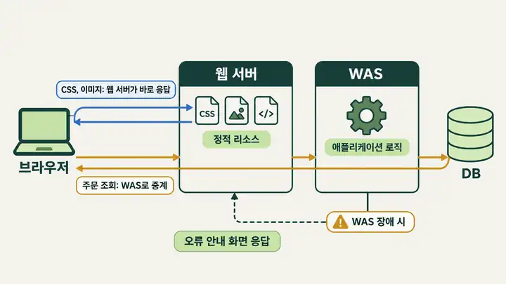
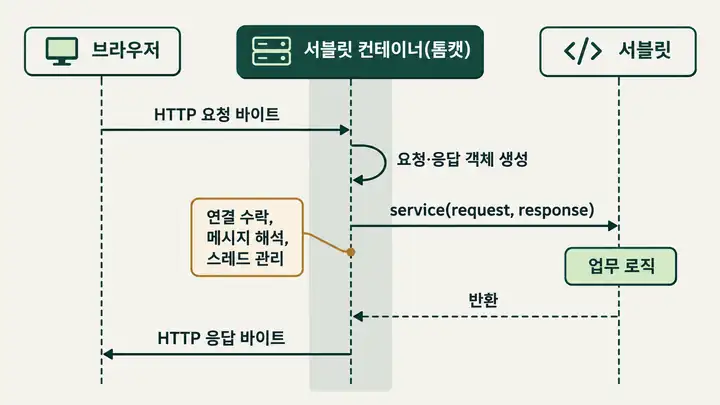
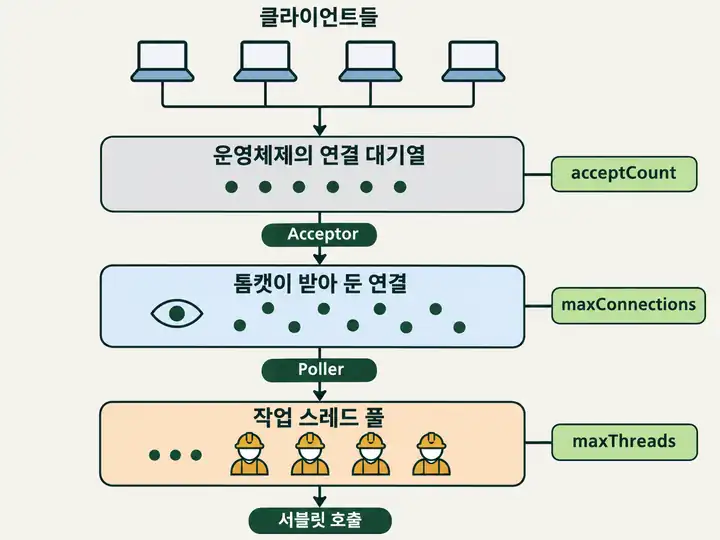
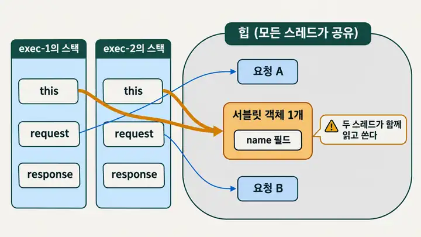
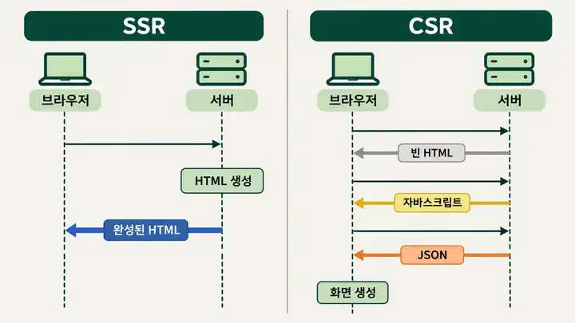

스프링 MVC 1편 / 01회
웹 애플리케이션 이해
포트 뒤에서 요청을 받는 프로그램을 소켓으로 직접 만들어 보고, 웹 서버와 WAS, 서블릿 컨테이너, 요청당 스레드와 스레드 풀, SSR과 CSR이 각각 어떤 문제의 답인지 실험으로 확인한다.
오늘 끝나면 할 수 있는 것
- 웹 서버와 웹 애플리케이션 서버(WAS)가 맡는 일을 정적·동적 처리로 구분하고, WEB–WAS–DB로 나누는 이유를 자원 사용과 장애 범위의 관점에서 설명할 수 있다.
- 서블릿 컨테이너가 개발자 대신 해 주는 일을 나열하고, 서블릿 객체가 언제 누구에 의해 만들어지고 몇 개 존재하는지를 임베디드 톰캣의 실행 로그에서 읽어 낼 수 있다.
- 단일 스레드, 요청마다 스레드 생성, 스레드 풀 세 모델에서 동시 요청의 완료 시각을 예측하고, 톰캣의
maxThreads·maxConnections·acceptCount가 각각 어느 대기 지점의 한도인지 그릴 수 있다. - 지역 변수와 필드가 놓이는 메모리 위치를 바이트코드로 확인하고, 하나뿐인 서블릿 객체의 필드가 동시 요청에서 깨지는 이유를 명령어 단위로 설명할 수 있다.
- 정적 리소스·HTML 페이지·HTTP API, 그리고 SSR·CSR의 차이를 응답 본문과 왕복 횟수로 비교하고, 서블릿에서 스프링 부트·WebFlux·가상 스레드까지 각 기술이 풀려던 불편을 순서대로 말할 수 있다.
핵심 강의 → 핵심 요약 → 실무 재판단 → 적용 연습 → 이해 확인
01 핵심 강의
이 강의의 차례 · 소제목 12개
- 이 회차의 질문: 포트 뒤에는 누가 있고, 내 코드는 누가 부르는가
- 웹 서버를 소켓으로 직접 만들어 본다
- 웹 서버와 웹 애플리케이션 서버
- 서블릿: 컨테이너가 해 주는 일과 개발자에게 남는 일
- 동시 요청과 스레드: 요청마다 실행 흐름을 하나씩 붙인다
- 스레드 풀: 만들어 둔 스레드를 빌려 쓰고 돌려준다
- 톰캣의 스레드 풀과 세 개의 한도
- 하나뿐인 서블릿 객체, 여럿인 스레드: 무엇이 공유되는가
- 서버가 돌려주는 세 가지: 정적 리소스, HTML 페이지, HTTP API
- SSR과 CSR: 화면을 누가 조립하는가
- 자바 백엔드 웹 기술의 역사: 불편을 하나씩 없애 온 순서
- 흔한 오해 여섯 가지
이 회차의 질문: 포트 뒤에는 누가 있고, 내 코드는 누가 부르는가
「HTTP 웹 기본 지식」 권에서 HTTP 요청은 TCP 연결 위를 흐르는 바이트의 나열이라는 것을 보았다. 「스프링 입문」에서는 스프링 부트 애플리케이션을 실행하면 내장 톰캣이 8080 포트를 열고, 브라우저의 요청이 컨트롤러 메서드 호출로 이어지는 것을 보았다. 두 장면 사이에 아직 설명되지 않은 구간이 있다. 포트에 도착한 바이트는 어떤 과정을 거쳐 자바 메서드 호출이 되는가. 그 일을 하는 프로그램은 어떤 구조이기에 요청 수천 개를 한꺼번에 감당하는가.
이 회차는 그 구간을 다섯 개의 질문으로 나누어 본다.
- 포트를 열고 요청을 받는 프로그램에는 어떤 종류가 있는가. 웹 서버와 웹 애플리케이션 서버는 무엇이 다른가.
- 그 프로그램은 어떤 약속으로 개발자가 쓴 자바 코드를 호출하는가. 서블릿은 무엇을 대신해 주는가.
- 요청이 동시에 여러 개 오면 누가 각각을 실행하는가. 스레드는 왜 풀로 관리하는가.
- 서버가 돌려주는 것은 무엇인가. 파일, HTML, 데이터는 어떻게 다르고, 화면은 서버와 브라우저 중 누가 조립하는가.
- 자바 웹 기술은 어떤 불편을 차례로 없애며 지금의 모습이 되었는가.
이 권의 나머지 회차는 이 지도 위의 한 구역씩을 깊게 판다. 02회는 서블릿 API를, 03회는 서블릿과 JSP로 MVC 패턴을, 04회는 프런트 컨트롤러를 직접 만드는 과정을, 05회부터는 스프링 MVC의 구조와 기능을 다룬다. 이 회차는 그 모든 것이 올라서는 바닥, 곧 소켓과 스레드와 서블릿 컨테이너를 본다.
웹 서버를 소켓으로 직접 만들어 본다
웹 서버(web server)는 HTTP 요청을 받아 HTTP 응답을 돌려주는 프로그램이다. 정의는 한 줄이지만 그 안에 다섯 가지 일이 들어 있다. 포트를 열고 연결을 기다린다. 들어온 연결 하나를 받는다. 요청 바이트를 읽어 해석한다. 응답할 내용을 마련한다. 응답 바이트를 써서 돌려보낸다. JDK의 ServerSocket과 Socket만으로 이 다섯 가지를 옮기면 다음 프로그램이 된다. 실행 인자로 처리 방식을 고를 수 있게 했는데, 우선 single만 본다.
import java.io.BufferedReader;
import java.io.IOException;
import java.io.InputStreamReader;
import java.io.OutputStream;
import java.net.ServerSocket;
import java.net.Socket;
import java.nio.charset.StandardCharsets;
import java.util.concurrent.ExecutorService;
import java.util.concurrent.Executors;
public class MiniServer {
static final long START = System.currentTimeMillis();
public static void main(String[] args) throws IOException {
String mode = args.length > 0 ? args[0] : "single";
ExecutorService pool = Executors.newFixedThreadPool(2);
try (ServerSocket listener = new ServerSocket(8080)) {
log("listening, mode=" + mode);
while (true) {
Socket socket = listener.accept(); // (1) 연결 하나를 꺼낸다
switch (mode) {
case "single" -> handle(socket); // main 스레드가 직접 처리
case "thread" -> new Thread(() -> handle(socket)).start(); // 요청마다 새 스레드
default -> pool.submit(() -> handle(socket)); // 풀의 스레드에 맡긴다
}
}
}
}
static void handle(Socket socket) {
try (socket) {
BufferedReader in = new BufferedReader(
new InputStreamReader(socket.getInputStream(), StandardCharsets.ISO_8859_1));
String requestLine = in.readLine(); // (2) 시작 줄: GET /a HTTP/1.1
String header;
while ((header = in.readLine()) != null && !header.isEmpty()) {
// (3) 헤더는 빈 줄이 나올 때까지 읽는다 (이 예제는 내용을 쓰지 않는다)
}
log("start " + requestLine);
Thread.sleep(2000); // (4) 2초 걸리는 업무 로직이라고 하자
byte[] body = ("handled by " + Thread.currentThread().getName() + "\n")
.getBytes(StandardCharsets.UTF_8);
OutputStream out = socket.getOutputStream(); // (5) 응답 메시지를 바이트로 쓴다
out.write(("HTTP/1.1 200 OK\r\n"
+ "Content-Type: text/plain; charset=utf-8\r\n"
+ "Content-Length: " + body.length + "\r\n"
+ "Connection: close\r\n"
+ "\r\n").getBytes(StandardCharsets.ISO_8859_1));
out.write(body);
out.flush();
log("end " + requestLine);
} catch (IOException | InterruptedException e) {
log("error " + e);
}
}
static void log(String message) {
System.out.printf("%5.1fs [%-15s] %s%n",
(System.currentTimeMillis() - START) / 1000.0, Thread.currentThread().getName(), message);
}
}한 줄씩 따라가 보자. new ServerSocket(8080)은 운영체제에 8080 포트로 오는 연결 요청을 받겠다고 등록한다. 이때부터 3-way handshake는 커널이 알아서 끝내고, 수립된 연결을 대기열에 쌓아 둔다. (1)의 accept()는 그 대기열에서 연결 하나를 꺼내 Socket 객체로 돌려준다. 대기열이 비어 있으면 연결이 올 때까지 이 호출에서 멈춰 있다.
(2)와 (3)은 요청 메시지를 읽는다. HTTP/1.1 요청은 시작 줄, 헤더 줄들, 빈 줄, 본문 순서이므로 첫 줄을 읽으면 메서드와 경로가 나오고, 빈 줄을 만날 때까지 읽으면 헤더가 끝난다. (4)는 실제 서버라면 DB를 조회하고 계산을 하는 자리다. 여기서는 2초를 자는 것으로 대신했다. (5)는 상태 줄, 헤더, 빈 줄, 본문을 규칙대로 이어 붙여 소켓에 쓴다. 본문의 바이트 수를 세어 Content-Length에 넣는 것도, 줄 끝을 \r\n으로 맞추는 것도 모두 손으로 한다. try (socket)을 빠져나오면 연결이 닫힌다.
이 서버를 single 방식으로 띄우고 1초 뒤에 요청 세 개(/a, /b, /c)를 거의 동시에 보냈다. 서버가 남긴 로그는 다음과 같다. 어느 요청이 먼저 잡히는지와 소수점 아래 숫자는 실행마다 다르다.
0.0s [main ] listening, mode=single
1.0s [main ] start GET /b HTTP/1.1
3.0s [main ] end GET /b HTTP/1.1
3.0s [main ] start GET /c HTTP/1.1
5.0s [main ] end GET /c HTTP/1.1
5.0s [main ] start GET /a HTTP/1.1
7.1s [main ] end GET /a HTTP/1.1세 요청은 같은 순간에 도착했는데 응답은 2초, 4초, 6초 뒤에 차례로 나갔다. 이유는 대괄호 안에 있다. 모든 줄을 main 스레드 하나가 실행했다. main이 handle 안에서 2초를 보내는 동안에는 while 루프의 처음으로 돌아가 accept()를 부를 수 없다. 나머지 두 연결은 그동안 커널의 대기열에 들어 있었다. 클라이언트 쪽에서 보면 연결은 이미 맺어졌고 요청 바이트도 보냈다. 오류는 나지 않고 응답만 늦게 온다. 뒤에서 볼 "서버가 느려진다"는 현상의 가장 단순한 형태가 이것이다.
이 60줄짜리 서버에는 실제 서버가 해야 하는 일이 거의 다 빠져 있다. 본문이 있는 요청이라면 Content-Length만큼 정확히 읽어야 하고, 쿼리 문자열과 폼 데이터의 퍼센트 인코딩을 풀어야 하고, 연결을 닫지 않고 다음 요청을 이어 받아야 하고(지속 연결), 요청을 보내다 만 클라이언트를 타임아웃으로 끊어야 하고, 형식이 틀린 요청에는 400을 돌려줘야 한다. 이 일들은 어떤 서비스를 만들든 똑같다. 서비스마다 다른 것은 (4)의 한 줄뿐이다. 웹 서버와 WAS, 그리고 서블릿은 "똑같은 일"과 "서비스마다 다른 일"을 갈라놓는 방법이다.
웹 서버와 웹 애플리케이션 서버
(4)에 들어갈 수 있는 일은 두 종류다. 하나는 요청한 경로에 해당하는 파일을 디스크에서 읽어 그대로 내보내는 것이다. HTML, CSS, 자바스크립트, 이미지, 영상처럼 누가 언제 요청해도 같은 바이트가 나가는 것을 정적 리소스(static resource)라고 한다. 다른 하나는 요청이 올 때마다 프로그램을 실행해 응답을 만들어 내는 것이다. 로그인한 사용자의 주문 목록처럼 요청한 사람과 시점에 따라 내용이 달라지므로 동적(dynamic) 처리라고 부른다.
이 구분에 따라 서버를 두 부류로 나누어 부른다.
| 웹 서버(Web Server) | 웹 애플리케이션 서버(WAS, Web Application Server) | |
|---|---|---|
| 중심이 되는 일 | 정적 리소스 제공. 그 밖에 요청을 다른 서버로 넘기는 중계(리버스 프록시) 같은 부가 기능 | 애플리케이션 코드를 실행해 응답을 만든다. 정적 리소스 제공도 할 수 있다 |
| 자바에서의 의미 | 자바 코드를 실행하지 않는다 | 서블릿 컨테이너를 갖추고 서블릿, JSP, 스프링 MVC를 실행한다 |
| 예 | nginx, Apache HTTP Server | Tomcat, Jetty, Undertow |
두 용어의 경계는 명세가 그어 준 것이 아니다. 웹 서버도 확장 기능으로 프로그램을 실행할 수 있고, WAS도 웹 서버가 하는 일을 대부분 할 수 있다. WAS라는 말도 Jakarta EE 명세 전체를 구현한 서버만 가리키는 좁은 뜻으로 쓰일 때가 있다. 톰캣은 공식 사이트에서 스스로를 Jakarta EE 기술의 일부를 구현한 오픈 소스 소프트웨어라고 소개한다. 이 강좌에서는 널리 쓰이는 넓은 뜻을 따른다. 애플리케이션 코드를 실행하는 데 특화된 서버가 WAS이고, 자바에서는 서블릿 컨테이너 기능을 가진 서버가 여기에 해당한다.
WAS 하나로도 되는데 왜 나누는가
WAS는 정적 리소스도 줄 수 있으니 WAS와 DB만으로 서비스를 구성할 수 있다. 실제로 그렇게 시작하는 시스템이 많다. 문제는 일이 늘었을 때 드러난다. WAS 한 대가 이미지와 CSS를 내보내는 일과 주문을 처리하는 일을 함께 하면, 값싼 일과 비싼 일이 같은 스레드와 같은 메모리를 놓고 경쟁한다. 정적 파일 요청이 몰려 스레드를 차지하면 정작 중요한 주문 처리가 밀린다.
장애의 범위도 문제다. 애플리케이션 코드는 서비스마다 새로 쓰는 코드이고 자주 바뀐다. 버그로 메모리가 바닥나거나, DB가 느려져 스레드가 전부 묶이는 일은 정적 파일만 내보내는 프로그램보다 훨씬 자주 일어난다. WAS 하나가 전부를 맡고 있으면 WAS가 멈추는 순간 브라우저에는 "연결할 수 없음"만 보인다. 점검 중이라는 안내 화면조차 내보낼 주체가 없다.
그래서 앞에 웹 서버를 두고 일을 나눈다.
┌──────────────────┐ 동적 요청만 ┌──────────────────┐ ┌──────┐
브라우저 ─ HTTP ─▶ │ 웹 서버 │ ─── HTTP ───▶ │ WAS │ ─────▶ │ DB │
│ 정적 리소스 응답 │ ◀───────────── │ 애플리케이션 로직 │ ◀───── │ │
│ WAS로 요청 중계 │ └──────────────────┘ └──────┘
│ WAS 장애 시 안내 │
└──────────────────┘
/css/site.css, /img/logo.png → 웹 서버가 파일을 읽어 바로 응답
/orders, /api/members/1 → 웹 서버가 WAS에 다시 요청하고, 받은 응답을 그대로 전달
- 자원을 따로 쓴다. 정적 리소스는 웹 서버가 처리하고 WAS에는 애플리케이션 로직이 필요한 요청만 도착한다. WAS의 스레드는 비싼 일에만 쓰인다.
- 따로 늘린다. 정적 리소스 요청이 많으면 웹 서버를, 애플리케이션 처리가 모자라면 WAS를 늘린다. 한쪽 때문에 다른 쪽까지 증설할 필요가 없다.
- 장애가 격리된다. 정적 파일을 내보내고 요청을 중계하는 일은 단순해서 웹 서버는 잘 멈추지 않는다. WAS나 DB가 응답하지 않을 때 웹 서버가 오류 안내 화면을 대신 내보낼 수 있다.
웹 서버가 동적 요청을 WAS에 넘긴다는 것은 웹 서버가 WAS를 상대로 새 HTTP 요청을 보낸다는 뜻이다. 브라우저와 웹 서버 사이의 TCP 연결과, 웹 서버와 WAS 사이의 TCP 연결은 별개다. WAS가 보는 TCP 상대는 브라우저가 아니라 웹 서버다. 이 구조에서 웹 서버가 하는 역할을 리버스 프록시(reverse proxy)라고 부른다.
이 구성이 언제나 정답인 것은 아니다. 화면 없이 데이터만 주고받는 API 서버라면 정적 리소스가 없으니 WAS만 두어도 된다. 구성은 "정적 리소스가 얼마나 되는가, WAS가 멈췄을 때 무엇을 보여 줘야 하는가"에 따라 정한다.

서블릿: 컨테이너가 해 주는 일과 개발자에게 남는 일
이제 WAS 안으로 들어간다. MiniServer에서 보았듯 요청 하나를 처리하려면 연결을 받고, 메시지를 해석하고, 업무 로직을 실행하고, 응답 메시지를 조립해 써야 한다. 업무 로직을 뺀 나머지는 모든 애플리케이션이 똑같다. 자바는 이 "똑같은 부분"과 "다른 부분"의 경계를 표준 인터페이스로 정해 두었다. 그것이 서블릿(servlet)이다.
Jakarta Servlet 6.0 명세는 서블릿을 컨테이너가 관리하면서 동적 콘텐츠를 만들어 내는 웹 컴포넌트로 정의한다. 그리고 서블릿 컨테이너(servlet container)는 웹 서버나 애플리케이션 서버의 일부로서, 요청과 응답이 오가는 네트워크 서비스를 제공하고, 요청을 해석하고 응답의 형식을 맞추며, 서블릿을 생명주기 내내 담아 두고 관리한다고 적는다. 톰캣이 서블릿 컨테이너다. 정리하면 역할이 이렇게 갈린다.
| 서블릿 컨테이너가 한다 | 개발자가 서블릿 안에 쓴다 |
|---|---|
| 포트를 열고 TCP 연결을 받는다 | 요청 객체에서 필요한 값을 꺼낸다 업무 로직을 실행한다 응답 객체에 결과를 쓴다 |
시작 줄·헤더·본문을 읽고 해석해 요청 객체(HttpServletRequest)를 만든다 | |
응답을 담을 객체(HttpServletResponse)를 만든다 | |
| URL에 맞는 서블릿을 찾아 두 객체를 넘기며 호출한다 | |
| 서블릿이 돌아오면 응답 객체의 내용으로 HTTP 응답 메시지를 만들어 보낸다 | |
| 서블릿 객체를 만들고, 초기화하고, 종료할 때 정리한다. 요청을 실행할 스레드를 관리한다 |
서블릿 하나를 만들어 임베디드 톰캣에 올려 보자. 스프링 없이 톰캣 라이브러리만 쓴다. 서블릿은 요청 파라미터 name을 읽어 인사말을 돌려주고, 자기 생애의 각 시점에 어떤 스레드가 자신을 호출하는지 기록한다.
import jakarta.servlet.http.HttpServlet;
import jakarta.servlet.http.HttpServletRequest;
import jakarta.servlet.http.HttpServletResponse;
import java.io.IOException;
import java.nio.file.Files;
import java.util.Comparator;
import org.apache.catalina.Context;
import org.apache.catalina.startup.Tomcat;
public class TomcatDemo {
static final long START = System.currentTimeMillis();
public static class WhoServlet extends HttpServlet {
public WhoServlet() {
trace("생성자 호출");
}
@Override
public void init() {
trace("init 호출");
}
@Override
protected void doGet(HttpServletRequest request, HttpServletResponse response)
throws IOException {
String name = request.getParameter("name");
trace("doGet 시작 name=" + name + " servlet@" + System.identityHashCode(this)
+ " request@" + System.identityHashCode(request));
try {
Thread.sleep(2000); // 2초 걸리는 업무 로직이라고 하자
} catch (InterruptedException e) {
Thread.currentThread().interrupt();
}
response.setContentType("text/plain;charset=UTF-8");
response.getWriter().println("hello " + name);
trace("doGet 끝 name=" + name);
}
@Override
public void destroy() {
trace("destroy 호출");
}
}
public static void main(String[] args) throws Exception {
Tomcat tomcat = new Tomcat();
tomcat.setBaseDir(Files.createTempDirectory("tomcat-demo").toString());
tomcat.setPort(8080);
tomcat.getConnector().setProperty("maxThreads", args[0]); // 작업 스레드의 최대 개수
Context context = tomcat.addContext("", null);
Tomcat.addServlet(context, "who", WhoServlet.class.getName()); // 객체가 아니라 클래스 이름을 넘긴다
context.addServletMappingDecoded("/who", "who"); // /who 로 온 요청은 who 서블릿에게
tomcat.start();
trace("톰캣 시작 완료");
Thread.sleep(Long.parseLong(args[1])); // 실험하는 동안 켜 둔다
Thread.getAllStackTraces().keySet().stream() // 톰캣 커넥터가 만든 스레드 목록
.filter(t -> t.getName().startsWith("http-nio"))
.sorted(Comparator.comparing(Thread::getName))
.forEach(t -> trace(t.getName() + " 상태=" + t.getState()));
tomcat.stop();
tomcat.destroy();
}
static void trace(String message) {
System.out.printf("%5.1fs [%-20s] %s%n",
(System.currentTimeMillis() - START) / 1000.0, Thread.currentThread().getName(), message);
}
}doGet 안을 MiniServer.handle과 견주어 보면 사라진 것이 보인다. 소켓도, 줄 단위 읽기도, \r\n도, Content-Length 계산도 없다. 쿼리 문자열 ?name=a를 잘라 내고 디코딩하는 일은 request.getParameter("name") 한 번으로 끝난다. 남은 것은 값을 꺼내고, 일을 하고, 결과를 쓰는 세 가지다. 작업 스레드 최대 개수를 200으로 주고 6초 동안 띄운 뒤, 요청 두 개를 차례로 보냈다.
$ curl -i "http://localhost:8080/who?name=a"
HTTP/1.1 200
Content-Type: text/plain;charset=UTF-8
Content-Length: 8
Date: Sun, 15 Nov 2026 20:12:14 GMT
hello a
$ curl "http://localhost:8080/who?name=b"
hello b서블릿은 콘텐츠 타입을 정하고 본문 한 줄을 썼을 뿐이다. 상태 줄, Content-Length: 8, Date 헤더는 톰캣이 응답 객체의 내용을 보고 붙였다. 같은 시간에 서버가 남긴 로그는 서블릿의 생애를 보여 준다. 해시 값과 스레드 번호는 실행마다 다르다.
0.4s [main ] 톰캣 시작 완료
1.1s [http-nio-8080-exec-1] 생성자 호출
1.1s [http-nio-8080-exec-1] init 호출
1.1s [http-nio-8080-exec-1] doGet 시작 name=a servlet@1156472852 request@1476209793
3.1s [http-nio-8080-exec-1] doGet 끝 name=a
3.1s [http-nio-8080-exec-2] doGet 시작 name=b servlet@1156472852 request@2093036140
5.1s [http-nio-8080-exec-2] doGet 끝 name=b
6.4s [main ] http-nio-8080-Acceptor 상태=RUNNABLE
6.4s [main ] http-nio-8080-Poller 상태=RUNNABLE
6.4s [main ] http-nio-8080-exec-1 상태=WAITING
6.4s [main ] http-nio-8080-exec-10 상태=WAITING
6.4s [main ] http-nio-8080-exec-2 상태=WAITING
… exec-3 부터 exec-9 까지 같은 형태 …
6.4s [main ] destroy 호출이 로그에서 읽어 낼 사실이 네 가지다.
- 서블릿 객체는 컨테이너가 만든다.
main에는new WhoServlet()이 없다. 톰캣에 넘긴 것은 클래스 이름 문자열이다. 생성자는 톰캣이 시작될 때가 아니라 첫 요청이 온 1.1초에, 그 요청을 맡은 작업 스레드 위에서 호출되었다. 명세는 서블릿을 컨테이너 시작 시점에 만들 수도 있고 요청을 처리할 필요가 생길 때까지 미룰 수도 있다고 정한다. 이 실험의 설정에서는 뒤쪽이 적용되었다. - 생성 →
init→ 요청 처리 →destroy순서다.Servlet인터페이스의 Javadoc이 적어 둔 순서 그대로다. 서블릿이 만들어져init으로 초기화되고, 클라이언트의 호출이service(HTTP에서는 그 안에서doGet등)로 처리되고, 서비스에서 빠질 때destroy가 불린다.init과destroy는 한 번씩만 불렸다. - 서블릿 객체는 하나다. 두 요청의
servlet@값이 같다. 명세는 분산 환경이 아닌 한 서블릿 선언 하나에 인스턴스를 하나만 쓰도록 컨테이너에 요구한다. 반면request@값은 요청마다 다르다. 요청 객체와 응답 객체는 요청마다 따로 주어진다. - 요청마다 실행한 스레드가 다를 수 있다. 첫 요청은
exec-1이, 둘째 요청은exec-2가 실행했다. 서블릿 객체는 하나인데 그것을 실행하는 스레드는 여럿이다.
3번과 4번을 합치면 이 권 전체를 관통하는 조건이 나온다. 객체 하나를 여러 스레드가 동시에 실행한다. 왜 이런 구조인지, 무엇을 조심해야 하는지는 스레드를 살펴본 뒤에 다룬다. HttpServletRequest에서 헤더와 파라미터와 본문을 꺼내는 방법, URL 매핑, 응답을 쓰는 방법은 02회의 몫이다.
- 연결 수락톰캣이 8080 포트의 대기열에서 TCP 연결을 꺼낸다.
- 요청 해석작업 스레드가 요청 바이트를 읽어 시작 줄과 헤더를 해석하고 요청·응답 객체를 준비한다.
- 서블릿 선택경로
/who에 매핑된 서블릿을 찾는다. 아직 객체가 없으면 만들고init을 부른다. - service 호출같은 작업 스레드가
service를 호출하고,HttpServlet이 메서드에 따라doGet으로 넘긴다. - 응답 전송서블릿이 돌아오면 톰캣이 응답 객체의 상태 코드·헤더·본문으로 HTTP 메시지를 만들어 소켓에 쓴다.
- 스레드 반납작업 스레드는 다음 요청을 받을 수 있는 상태로 돌아간다.

동시 요청과 스레드: 요청마다 실행 흐름을 하나씩 붙인다
single 방식의 서버가 요청을 차례로만 처리한 까닭은 프로그램 안에 코드를 실행하는 흐름이 하나뿐이었기 때문이다. 이 실행 흐름을 스레드(thread)라고 한다. 자바 프로그램은 main 스레드 하나로 시작하고, new Thread(...).start()를 호출할 때마다 독립된 실행 흐름이 하나씩 늘어난다. JDK 21에서 이렇게 만든 보통의 스레드를 플랫폼 스레드(platform thread)라고 부르는데, 오라클의 자바 21 문서는 이것을 운영체제 스레드를 얇게 감싼 것이라고 설명한다. 어느 스레드를 언제 어느 CPU 코어에서 실행할지는 운영체제가 정한다.
스레드가 코어보다 많으면 운영체제는 스레드들을 짧은 시간씩 번갈아 실행한다. 실행하던 스레드를 멈추고 다른 스레드로 바꿀 때에는 멈추는 쪽이 어디까지 실행했는지를 저장하고, 이어받는 쪽이 지난번에 멈춘 지점의 상태를 복원해야 한다. 이 교대를 컨텍스트 스위칭(context switching)이라고 한다. 스레드의 생성과 상태, 동기화는 로드맵 뒤쪽의 「자바 고급 1편」이 한 권을 들여 다룬다. 여기서는 웹 서버의 구조를 이해하는 데 필요한 만큼만 쓴다.
MiniServer의 thread 방식은 연결을 받을 때마다 스레드를 새로 만든다. new Thread(() -> handle(socket)).start() 한 줄의 뜻은 "이 연결의 처리는 새 실행 흐름에 맡기고, 나는 곧바로 다음 연결을 받으러 간다"이다. 같은 조건으로 요청 세 개를 동시에 보냈다.
0.0s [main ] listening, mode=thread
1.0s [Thread-0 ] start GET /b HTTP/1.1
1.0s [Thread-1 ] start GET /c HTTP/1.1
1.0s [Thread-2 ] start GET /a HTTP/1.1
3.0s [Thread-1 ] end GET /c HTTP/1.1
3.0s [Thread-0 ] end GET /b HTTP/1.1
3.0s [Thread-2 ] end GET /a HTTP/1.1세 요청이 1.0초에 함께 시작해 3.0초에 함께 끝났다. 대괄호 안의 이름이 Thread-0, Thread-1, Thread-2로 모두 다르다. main은 첫 줄에만 나온다. 연결을 꺼내 새 스레드에 넘기는 일만 하고 곧바로 accept()로 돌아갔기 때문이다. 세 스레드는 각자 handle을 실행하다가 Thread.sleep에서 멈췄고, 잠든 스레드는 CPU를 쓰지 않으므로 서로를 방해하지 않았다. 끝나는 순서가 시작한 순서와 다른 것은 스레드의 실행 순서를 운영체제가 정하기 때문이고, 실행할 때마다 달라진다.
실제 서버에서 sleep의 자리에 있는 것은 DB에 SQL을 보내고 결과를 기다리는 일, 다른 서버의 API를 호출하고 응답을 기다리는 일이다. 기다리는 동안 스레드는 멈춰 있고 CPU는 비어 있다. 그래서 이런 대기가 섞인 일은 코어 수보다 많은 스레드로 겹쳐서 진행할 수 있다. 요청 하나에 스레드 하나를 붙여 처음부터 끝까지 맡기는 이 방식을 요청당 스레드(thread-per-request) 모델이라고 한다.
이 모델의 장점은 코드에 있다. handle 안은 위에서 아래로 읽히는 평범한 순차 코드다. 읽고, 기다리고, 쓰는 순서가 코드의 줄 순서와 같고, 예외가 나면 스택 트레이스에 그 요청이 지나온 경로가 그대로 남는다. 가상 스레드를 도입한 JEP 444도 이 방식을 이해하기 쉽고, 프로그래밍하기 쉽고, 디버깅과 프로파일링이 쉽다고 적는다. 느린 요청 하나가 다른 요청을 막지 않는다는 것은 방금 실험에서 본 대로다.
문제는 "요청이 올 때마다 새로 만든다"는 부분에 있다.
- 만드는 비용. 플랫폼 스레드를 만들려면 운영체제에 스레드를 요청하고 그 스레드가 쓸 스택 영역을 마련해야 한다. JDK 21의
java명령 문서가 밝힌 스레드 스택 크기(-Xss)의 기본값은 Linux/x64에서 1024KB, Linux/Aarch64와 macOS/Aarch64에서 2048KB다. 요청이 올 때마다 이 준비를 하고 응답이 끝나면 버리므로, 모든 요청의 응답 시간에 스레드를 만드는 시간이 얹힌다. - 교대하는 비용. 동시에 실행하려는 스레드가 코어 수보다 훨씬 많아지면 컨텍스트 스위칭이 잦아진다. 스레드가 늘수록 CPU 시간 가운데 업무 로직이 아니라 교대에 쓰이는 몫이 커진다.
- 상한이 없다. 가장 큰 문제다. 요청이 몰리면 스레드도 그만큼 만들어진다. 스레드 수가 메모리와 CPU가 감당할 수 있는 선을 넘으면 서버는 느려지는 데서 그치지 않고 멈춘다. 가장 바쁜 순간에 가장 위험하게 동작하는 구조다.
스레드 풀: 만들어 둔 스레드를 빌려 쓰고 돌려준다
세 문제의 답은 하나다. 스레드를 정해진 개수만큼만 만들어 두고, 요청이 오면 그중 쉬고 있는 스레드에 일을 맡기고, 일이 끝나면 스레드를 없애지 않고 다음 일을 기다리게 한다. 이 스레드의 묶음을 스레드 풀(thread pool)이라고 한다. MiniServer의 세 번째 방식이 이것이다. Executors.newFixedThreadPool(2)는 스레드 두 개짜리 풀을 만들고, pool.submit(...)은 할 일을 풀의 작업 큐에 넣는다. 이 메서드의 Javadoc은 풀이 고정된 수의 스레드를 재사용하고, 모든 스레드가 일하는 중에 들어온 작업은 스레드가 빌 때까지 큐에서 기다린다고 적는다.
0.0s [main ] listening, mode=pool
1.0s [pool-1-thread-1] start GET /b HTTP/1.1
1.0s [pool-1-thread-2] start GET /c HTTP/1.1
3.0s [pool-1-thread-1] end GET /b HTTP/1.1
3.0s [pool-1-thread-2] end GET /c HTTP/1.1
3.0s [pool-1-thread-1] start GET /a HTTP/1.1
5.0s [pool-1-thread-1] end GET /a HTTP/1.1이 로그에서 세 가지를 읽는다. 첫째, 스레드 이름이 pool-1-thread-1과 pool-1-thread-2 둘뿐이다. 요청이 몇 개가 오든 이 서버에서 handle을 실행하는 스레드는 둘을 넘지 않는다. 둘째, /a는 3.0초에 pool-1-thread-1에서 시작했다. /b를 끝낸 바로 그 스레드가 사라지지 않고 다음 일을 집어 든 것이다. 스레드를 만드는 비용은 풀을 만들 때 한 번만 치렀다.
셋째, /a가 1.0초부터 3.0초까지 머문 곳이 single 방식 때와 다르다. 그때는 main이 accept()를 부르지 못해 연결이 커널의 대기열에 있었다. 지금은 main이 연결을 곧바로 꺼내 submit으로 풀에 넘겼으므로, 연결은 이미 프로그램 안에 들어와 풀의 작업 큐에서 차례를 기다렸다. 기다리는 장소가 어디인지는 다음 절에서 톰캣의 설정값을 읽을 때 그대로 쓰인다.
| 방식 | 2초짜리 요청 세 개의 완료 시각 | handle을 실행하는 스레드 수 | 넘치는 요청이 가는 곳 |
|---|---|---|---|
단일 스레드(single) | 2초, 4초, 6초 | 1 | 커널의 연결 대기열 |
요청마다 스레드 생성(thread) | 2초, 2초, 2초 | 요청 수만큼, 상한 없음 | 넘치는 일이 없다. 대신 서버가 감당하지 못할 수 있다 |
스레드 풀(pool, 스레드 2개) | 2초, 2초, 4초 | 최대 2 | 풀의 작업 큐 |
풀이 주는 것은 두 가지다. 스레드를 재사용하므로 요청마다 치르던 생성 비용이 사라진다. 그리고 스레드 수에 상한이 생긴다. 요청이 아무리 몰려도 서버는 정해진 수만큼만 동시에 처리하고, 나머지는 기다리게 한다. 기다림이 길어지는 것은 좋은 일이 아니지만, 서버가 멈춰서 처리하던 요청까지 모두 잃는 것과는 차원이 다른 문제다. 몰린 요청이 지나가면 큐가 비고 서버는 원래 속도로 돌아온다.
톰캣의 스레드 풀과 세 개의 한도
톰캣은 이 구조를 갖춘 채로 제공된다. 서블릿 절의 실행 로그 끝에 찍힌 스레드 목록이 그 모습이다. 이름이 http-nio-8080-으로 시작하는 스레드가 세 종류 있었다. Tomcat 10.1 설정 문서에 따르면 커넥터의 기본 프로토콜 값 HTTP/1.1은 자바 NIO 기반 커넥터를 쓰고, 이 커넥터가 만든 스레드들이다. Tomcat 11.0.27의 소스에서 확인한 각자의 역할은 다음과 같다.
- Acceptor:
accept()를 되풀이해 호출하며 커널의 대기열에서 연결을 꺼낸다.MiniServer에서main스레드가 하던 일이다. - Poller: 꺼내 온 연결들을 한꺼번에 지켜보다가, 읽을 바이트가 도착한 연결이 생기면 그 연결의 처리를 작업 스레드 풀에 넘긴다.
- exec-N: 작업 스레드다. 요청 바이트를 읽어 해석하고, 서블릿의
service를 호출하고, 응답을 쓴다.MiniServer의pool-1-thread-N에 해당한다.
작업 스레드의 수가 요청 처리에 어떤 영향을 주는지 보기 위해, 같은 TomcatDemo를 작업 스레드 최대 개수 2로 띄우고 2초짜리 요청 다섯 개(name=a부터 e까지)를 동시에 보냈다.
0.5s [main ] 톰캣 시작 완료
1.3s [http-nio-8080-exec-2] 생성자 호출
1.3s [http-nio-8080-exec-2] init 호출
1.3s [http-nio-8080-exec-1] doGet 시작 name=e servlet@2023053105 request@1532167393
1.3s [http-nio-8080-exec-2] doGet 시작 name=d servlet@2023053105 request@312783402
3.3s [http-nio-8080-exec-1] doGet 끝 name=e
3.3s [http-nio-8080-exec-2] doGet 끝 name=d
3.3s [http-nio-8080-exec-2] doGet 시작 name=b servlet@2023053105 request@1773921562
3.3s [http-nio-8080-exec-1] doGet 시작 name=a servlet@2023053105 request@1820559110
5.3s [http-nio-8080-exec-1] doGet 끝 name=a
5.3s [http-nio-8080-exec-2] doGet 끝 name=b
5.3s [http-nio-8080-exec-1] doGet 시작 name=c servlet@2023053105 request@1025094245
7.3s [http-nio-8080-exec-1] doGet 끝 name=c
9.5s [main ] http-nio-8080-Acceptor 상태=RUNNABLE
9.5s [main ] http-nio-8080-Poller 상태=RUNNABLE
9.5s [main ] http-nio-8080-exec-1 상태=WAITING
9.5s [main ] http-nio-8080-exec-2 상태=WAITING
9.5s [main ] destroy 호출클라이언트 쪽에서 잰 응답 시간은 두 요청이 약 2초, 두 요청이 약 4초, 한 요청이 약 6초였다. 어느 요청이 먼저 잡히는지는 실행마다 다르지만 모양은 같다. 어느 순간에도 doGet 안에 있는 요청은 둘을 넘지 않고, 한 스레드가 요청을 끝낸 바로 그 시각에 다음 요청을 시작한다. 끝의 스레드 목록에도 작업 스레드는 exec-1과 exec-2뿐이다. 앞의 실험에서는 요청이 두 개뿐이었는데도 exec-10까지 있었다. 그것은 톰캣이 한가할 때에도 유지하는 스레드 수(minSpareThreads, 기본 10)만큼 미리 만들어 두었기 때문이고, 이번에는 그 수가 maxThreads인 2를 넘을 수 없어 둘만 만들어졌다.
이 로그는 서블릿 객체가 하나라는 사실도 다시 보여 준다. 첫 두 요청이 같은 순간에 도착해 서로 다른 스레드에 배정되었는데 생성자와 init은 exec-2에서 한 번만 불렸고, 다섯 요청의 servlet@ 값이 모두 같다. 1.3초에는 두 스레드가, 3.3초에도 두 스레드가 같은 객체의 doGet을 동시에 실행하고 있었다.
톰캣 커넥터에는 요청이 기다릴 수 있는 지점이 세 군데 있고, 지점마다 한도를 정하는 속성이 있다. 아래 표의 설명과 기본값은 Tomcat 10.1 설정 문서의 것이다.
| 속성 | 기본값 | 무엇의 한도인가 | 한도에 이르면 |
|---|---|---|---|
maxThreads | 200 | 요청을 처리하는 작업 스레드의 최대 수. 곧 동시에 처리 중일 수 있는 요청의 최대 수 | 연결은 받아 둔 채로, 요청이 톰캣 안의 작업 큐에서 스레드가 비기를 기다린다 |
minSpareThreads | 10 | 일하는 스레드와 쉬는 스레드를 합쳐 항상 유지하는 최소 수 | 해당 없음 |
maxConnections | 8192 | 톰캣이 받아서 처리하고 있는 연결의 최대 수 | 연결을 하나 더 받되 처리하지 않고 멈춘다. 그 뒤의 연결은 운영체제의 대기열에 쌓인다 |
acceptCount | 100 | maxConnections에 이르렀을 때 들어오는 연결 요청을 쌓아 두는 운영체제 대기열의 길이. 운영체제가 이 값을 무시하고 다른 길이를 쓸 수 있다 | 운영체제가 연결을 거부하거나, 클라이언트 쪽에서 연결 시도가 타임아웃된다 |
클라이언트들
│ TCP 연결 요청
▼
┌────────────────────────────────┐
│ ① 운영체제의 연결 대기열 │ 길이: acceptCount (기본 100)
│ handshake가 끝난 연결이 쌓임 │ 가득 차면 → 연결 거부 또는 타임아웃
└───────────────┬────────────────┘
│ Acceptor 스레드가 accept()
▼
┌────────────────────────────────┐
│ ② 톰캣이 받아 둔 연결 │ 개수: maxConnections (기본 8192)
│ Poller가 읽을 것이 왔는지 감시 │ 이르면 → Acceptor가 accept를 멈춘다
└───────────────┬────────────────┘
│ 요청 바이트가 도착한 연결만
▼
┌────────────────────────────────┐
│ ③ 작업 스레드 풀 exec-1 … exec-N │ 개수: maxThreads (기본 200)
│ 요청 해석 → 서블릿 → 응답 쓰기 │ 모두 바쁘면 → 풀의 작업 큐에서 대기
└────────────────────────────────┘
앞의 실험에서 다섯 요청 가운데 셋이 기다린 곳은 ③의 작업 큐다. 연결 다섯 개는 모두 Acceptor가 받았고(②의 한도 8192에 한참 못 미친다), Poller가 요청이 도착했음을 알아채 풀에 넘겼지만, 스레드가 둘뿐이어서 셋은 큐에 들어갔다. Tomcat 11.0.27의 소스에서 이 큐의 기본 용량은 Integer.MAX_VALUE다. 스레드가 모자랄 때 톰캣은 기본 설정에서 요청을 거절하지 않고 기다리게 한다.
연결의 한도(8192)가 스레드의 한도(200)보다 훨씬 큰 것은 연결 하나가 언제나 스레드 하나를 차지하지는 않기 때문이다. 「HTTP 웹 기본 지식」 권에서 본 지속 연결을 떠올려 보자. 브라우저는 응답을 받은 뒤에도 연결을 끊지 않고 다음 요청에 다시 쓴다. 그 사이에 연결은 열려 있지만 오가는 바이트가 없다. Tomcat 10.1 문서의 커넥터 비교표는 NIO 커넥터에서 "다음 요청을 기다리는 일"과 "요청 헤더를 읽는 일"이 논블로킹이고, "요청 본문을 읽는 일"과 "응답을 쓰는 일"이 블로킹이라고 적는다. 요청을 보내지 않고 열려만 있는 연결은 작업 스레드를 차지하지 않고 Poller의 감시 대상으로 남아 있다는 뜻이다. 요청이 실제로 도착해 서블릿이 실행되는 구간에서만 스레드 하나가 그 요청에 묶인다.
그래서 "요청당 스레드"라는 말은 정확히 읽어야 한다. 연결 하나에 스레드 하나가 아니라, 처리 중인 요청 하나에 스레드 하나다. 서블릿 명세의 비동기 처리 기능을 쓰지 않는 한, service가 시작해서 끝날 때까지의 모든 코드는 같은 작업 스레드 하나가 실행한다. 그 안에서 DB를 호출하고 2초를 기다리면 그 스레드는 2초 동안 다른 요청을 받지 못한다.
스레드가 모자라면 무슨 일이 일어나는가
스레드 풀이 처리할 수 있는 양에는 산수로 구할 수 있는 상한이 있다. 요청 하나가 스레드를 쥐고 있는 시간이 2초이고 스레드가 2개라면, 2초마다 2건, 곧 1초에 1건이 한계다. 앞의 실험에서 다섯 요청이 끝나는 데 6초가 걸린 것이 이 계산과 맞는다. 일반화하면 1초에 처리할 수 있는 요청 수의 상한은 스레드 수를 요청 하나의 처리 시간(초)으로 나눈 값이다. 스레드 200개에 요청 하나가 0.1초라면 상한은 초당 2,000건이다. CPU와 DB가 그만큼을 받쳐 줄 때의 이야기이고, 스레드 수가 정하는 천장이 거기라는 뜻이다.
이 식에서 장애가 번지는 경로가 보인다. DB가 느려져 요청 하나의 처리 시간이 0.1초에서 2초로 늘었다고 하자. 스레드 수는 그대로 200이므로 상한은 초당 100건으로 내려간다. 들어오는 요청이 초당 300건이라면 매초 200건씩 작업 큐에 쌓이고, 뒤에 온 요청일수록 큐에서 기다리는 시간이 길어진다. 이때 서버를 들여다보면 CPU 사용률은 낮다. 스레드들은 일하고 있는 것이 아니라 DB의 응답을 기다리며 멈춰 있기 때문이다. 처음에 single 방식의 서버에서 본 "오류는 나지 않고 응답만 늦게 온다"가 스레드 200개짜리 서버에서 같은 원리로 다시 나타난 것이다.
maxThreads는 얼마가 적당한가
값이 너무 작으면 서버의 자원이 남는데도 요청이 기다린다. 대기가 섞인 요청은 CPU를 거의 쓰지 않으므로, 스레드를 더 두었다면 겹쳐서 처리할 수 있었을 요청들이 큐에 서 있게 된다. 값이 너무 크면 반대의 문제가 생긴다. 동시에 실행되는 요청이 많아져 CPU와 메모리, 그리고 DB 커넥션 같은 뒤쪽 자원을 두고 다투고, 컨텍스트 스위칭이 늘고, 심하면 메모리가 바닥나 서버가 멈춘다. 스레드 풀이 막아 주려던 바로 그 상황이다.
적당한 값은 요청이 CPU 계산 위주인지 대기 위주인지, 코어가 몇 개인지, 뒤쪽의 DB가 동시에 몇 개의 작업을 받아 줄 수 있는지에 따라 달라진다. 계산으로 정해지는 값이 아니다. 실제 서비스와 비슷한 요청을 실제와 비슷한 양으로 걸어 보고, 응답 시간과 CPU·메모리 사용량을 보면서 정한다. 스프링 부트에서는 이 값들을 server.tomcat.threads.max(기본 200), server.tomcat.threads.min-spare(기본 10), server.tomcat.max-connections(기본 8192), server.tomcat.accept-count(기본 100) 프로퍼티로 바꾼다. 기본값은 Spring Boot 3.5의 프로퍼티 문서에서 확인한 것이고 톰캣의 기본값과 같다.
이 구조가 개발자에게 주는 것을 정리해 두자. 스레드를 만들고, 요청에 배정하고, 끝나면 회수하는 일은 WAS가 한다. 개발자는 스레드를 다루는 코드를 한 줄도 쓰지 않고, 서블릿 안의 코드를 스레드가 하나뿐인 것처럼 위에서 아래로 쓴다. 다만 한 가지는 WAS가 대신해 주지 못한다. 서블릿 객체가 하나라는 사실에서 나오는 문제다.

하나뿐인 서블릿 객체, 여럿인 스레드: 무엇이 공유되는가
서블릿 객체를 하나만 두는 까닭부터 보자. 서블릿이 가진 것은 요청을 처리하는 로직이다. 요청마다 달라지는 데이터는 요청 객체와 응답 객체에 담겨 매번 따로 전달된다. 로직은 누가 요청하든 같으므로 요청마다 서블릿 객체를 새로 만들고 버릴 이유가 없다. 명세도 서블릿 선언 하나에 인스턴스 하나를 쓰도록 정한다. 그 결과가 앞에서 본 조건, 객체 하나를 여러 스레드가 동시에 실행하는 상황이다. Jakarta Servlet 6.0 명세의 "Multithreading Issues" 절은 컨테이너가 서블릿의 service 메서드로 동시 요청을 보낼 수 있으며, 여러 스레드의 동시 처리에 대한 대비는 개발자가 해야 한다고 적는다.
대비하려면 무엇이 스레드마다 따로 있고 무엇이 공유되는지를 알아야 한다. 답은 JVM의 메모리 구조에 있다. 「자바 기본편」에서 본 스택과 힙의 구분을 스레드가 여럿인 상황으로 넓히면 된다. JVM 명세의 해당 대목은 다음과 같다.
- JVM의 스레드마다 전용 JVM 스택이 있고, 스택은 스레드와 함께 만들어지며 프레임을 저장한다(JVMS §2.5.2).
- 메서드가 호출될 때마다 새 프레임이 만들어진다. 프레임은 그것을 만든 스레드에 속하며 다른 스레드가 참조할 수 없다(§2.6).
- 프레임마다 지역 변수(local variables)라는 변수 배열이 들어 있다(§2.6.1). 메서드의 매개변수와 지역 변수가 여기에 놓인다.
- 힙은 모든 스레드가 공유하며, 모든 클래스 인스턴스와 배열이 힙에 할당된다(§2.5.3).
정리하면 지역 변수와 매개변수는 스레드마다 따로 있고, 객체의 필드는 그 객체를 참조하는 모든 스레드가 함께 본다. 이 차이는 바이트코드에 그대로 드러난다. 필드 하나와 지역 변수 하나를 쓰는 작은 클래스를 만들어 확인한다.
public class HitCounter {
private int hits; // 필드: 힙에 있는 객체 안에 놓인다
int handle(int amount) {
int doubled = amount * 2; // 지역 변수: 호출한 스레드의 스택 프레임 안에 놓인다
hits++; // 필드를 읽고, 1을 더하고, 다시 쓴다
return doubled;
}
public static void main(String[] args) throws InterruptedException {
HitCounter shared = new HitCounter(); // 객체는 하나뿐이다
Runnable work = () -> {
for (int i = 0; i < 100_000; i++) {
shared.handle(i);
}
};
Thread first = new Thread(work);
Thread second = new Thread(work);
first.start();
second.start();
first.join();
second.join();
System.out.println("hits = " + shared.hits + " (기대한 값 200000)");
}
}HitCounter 객체 하나가 서블릿 객체, handle이 service, 두 스레드가 톰캣의 작업 스레드 둘에 해당한다. javap -c -p HitCounter로 본 handle의 바이트코드는 다음과 같다. 오른쪽의 한글 설명은 덧붙인 것이다.
int handle(int);
Code:
0: iload_1 지역 변수 1번(amount)을 피연산자 스택에 올린다
1: iconst_2
2: imul
3: istore_2 곱한 값을 지역 변수 2번(doubled)에 저장한다
4: aload_0 지역 변수 0번(this)을 올린다
5: dup
6: getfield #7 // Field hits:I 힙의 객체에서 hits를 읽어 온다
9: iconst_1
10: iadd 스택 위에서 1을 더한다
11: putfield #7 // Field hits:I 더한 값을 힙의 객체에 쓴다
14: iload_2
15: ireturnamount와 doubled를 다루는 명령은 iload_1, istore_2다. 번호는 현재 프레임의 지역 변수 배열에서 몇 번째 칸인지를 가리킨다. 두 스레드가 동시에 handle을 호출하면 프레임이 두 개 생기고, 프레임마다 1번 칸과 2번 칸이 따로 있다. 한 스레드의 istore_2가 다른 스레드의 2번 칸에 닿을 방법이 없다. 지역 변수는 아무 조치 없이도 섞이지 않는다.
hits를 다루는 명령은 다르다. getfield와 putfield는 this가 가리키는 힙의 객체에서 값을 읽고 쓴다. 두 스레드의 this는 같은 객체를 가리키므로 두 스레드가 같은 메모리를 읽고 쓴다. 그리고 소스에서 한 줄인 hits++가 읽기(getfield), 더하기(iadd), 쓰기(putfield)의 세 단계로 나뉘어 있다. 스레드는 이 단계들 사이 어디에서든 다른 스레드와 교대될 수 있다. hits가 5일 때 두 스레드가 다음 순서로 실행되었다고 해 보자.
| 순서 | 스레드 A | 스레드 B | 힙의 hits |
|---|---|---|---|
| 1 | getfield: 5를 읽는다 | 5 | |
| 2 | getfield: 5를 읽는다 | 5 | |
| 3 | iadd: 자기 스택에서 6을 만든다 | 5 | |
| 4 | iadd: 자기 스택에서 6을 만든다 | 5 | |
| 5 | putfield: 6을 쓴다 | 6 | |
| 6 | putfield: 6을 쓴다 | 6 |
두 번 더했는데 값은 1만 늘었다. B가 읽은 5는 A가 6을 쓰기 전의 값이었고, B는 그 낡은 값에 1을 더해 A의 결과를 덮어썼다. 이것을 갱신 손실(lost update)이라고 한다. 프로그램을 세 번 실행한 결과는 다음과 같다. 값은 실행마다 다르다.
hits = 105132 (기대한 값 200000)
hits = 106931 (기대한 값 200000)
hits = 120837 (기대한 값 200000)숫자가 틀리는 정도라면 그나마 눈에 띈다. 서블릿에서 같은 실수를 하면 더 나쁜 일이 생긴다. 요청마다 달라지는 값을 필드에 두는 서블릿을 임베디드 톰캣에 올려 보았다. 톰캣을 띄우는 main은 TomcatDemo와 같은 구조이고, 서블릿을 /greeting에 매핑했다.
public static class GreetingServlet extends HttpServlet {
private String name; // 요청마다 달라지는 값을 필드에 두었다
@Override
protected void doGet(HttpServletRequest request, HttpServletResponse response)
throws IOException {
this.name = request.getParameter("name"); // (1) 필드에 적어 둔다
try {
Thread.sleep(1000); // (2) 1초 걸리는 조회라고 하자
} catch (InterruptedException e) {
Thread.currentThread().interrupt();
}
response.setContentType("text/plain;charset=UTF-8");
response.getWriter().println("hello " + this.name); // (3) 필드에서 다시 읽는다
}
}
// ... 톰캣을 띄우는 main 은 TomcatDemo 와 같은 구조다/greeting?name=kim을 보내고 0.3초 뒤에 /greeting?name=lee를 보냈다. 두 클라이언트가 받은 응답은 이렇다.
name=kim 을 보낸 쪽이 받은 응답: hello lee
name=lee 를 보낸 쪽이 받은 응답: hello leekim이 lee의 이름을 받았다. 시간 순서로 따라가면 이유가 보인다. 0.0초에 스레드 A가 (1)에서 필드에 "kim"을 쓰고 (2)에서 잠든다. 0.3초에 스레드 B가 같은 객체의 같은 필드에 "lee"를 덮어쓰고 잠든다. 1.0초에 A가 깨어나 (3)에서 필드를 읽으면 거기에는 "lee"가 있다. A에게는 자기가 쓴 값이 사라졌다는 것을 알 방법이 없다. 이름 대신 주문 내역이나 계좌 잔액이 들어 있었다면 다른 사람의 정보가 화면에 나간 것이다.
exec-1의 JVM 스택 exec-2의 JVM 스택
┌────────────────────┐ ┌────────────────────┐
│ doGet 프레임 │ │ doGet 프레임 │ 프레임은 스레드마다 따로 있다
│ request → 요청 A │ │ request → 요청 B │ 요청·응답 객체도 요청마다 따로다
│ response → 응답 A │ │ response → 응답 B │
│ this ──────┐ │ │ this ──────┐ │
└──────────────┼──────┘ └──────────────┼──────┘
▼ ▼
┌──────────────────────────────────────┐
│ 힙: GreetingServlet 객체 (하나) │ 두 this가 같은 객체를 가리킨다
│ name = "lee" │ 필드는 두 스레드가 함께 읽고 쓴다
└──────────────────────────────────────┘
이 버그는 찾기가 어렵다. 개발자가 혼자 요청을 하나씩 보내며 시험하면 한 번도 나타나지 않는다. 두 요청의 처리 구간이 겹칠 때에만 나타나므로, 사용자가 늘어난 운영 환경에서, 그것도 가끔 드러난다. 고치는 방법은 단순하다. String name = request.getParameter("name");처럼 지역 변수에 받으면 값은 각 스레드의 프레임 안에 놓이고 다른 스레드가 닿을 수 없다.
여기서 나오는 규칙이 무상태(stateless) 설계다.
- 요청마다 달라지는 값은 지역 변수와 매개변수에 둔다. 요청 처리 중에 여러 메서드가 함께 써야 하는 값은 인자로 넘기거나 요청 객체에 담는다.
- 필드에는 만들어진 뒤로 바뀌지 않는 값이나, 여러 스레드가 함께 써도 안전하게 만들어진 객체만 둔다. 설정값을 담은
final필드를 여러 스레드가 읽기만 하는 것은 문제가 없다. - 요청·응답 객체는 힙에 있지만 그 요청을 맡은 스레드만 참조를 갖고 있으므로 섞이지 않는다. 이 참조를 필드에 저장하면 필드에 이름을 저장한 것과 같은 문제가 생긴다.
- 방문 횟수처럼 여러 요청이 정말로 함께 고쳐야 하는 값은 동기화나 원자적 연산으로 보호해야 한다. 그 도구들은 「자바 고급 1편」에서 다룬다. 명세는
service메서드 전체를 동기화하는 방식은 성능에 해롭다는 이유로 권하지 않는다. 그렇게 하면 한 번에 한 스레드만 서블릿을 실행하게 되어 스레드 풀을 둔 의미가 사라진다.
「스프링 핵심 원리 기본편」에서 싱글톤 빈은 상태를 유지하지 않게 설계해야 한다고 배웠다. 그 규칙이 실제로 문제가 되는 곳이 여기다. 스프링 MVC의 컨트롤러와 서비스, 리포지토리는 기본적으로 싱글톤 빈이고, 톰캣의 작업 스레드 여럿이 그 객체들의 메서드를 동시에 실행한다. 서블릿에서 본 조건이 스프링 빈 전체로 넓어졌을 뿐이다.

서버가 돌려주는 세 가지: 정적 리소스, HTML 페이지, HTTP API
지금까지는 요청이 서버 안에서 어떻게 실행되는지를 보았다. 이제 그 결과로 무엇이 나가는지를 본다. 서버가 응답 본문에 담아 보내는 것은 세 종류로 나눌 수 있다.
정적 리소스
이미 저장되어 있는 파일을 그대로 보낸다. HTML 파일, CSS, 자바스크립트, 이미지, 영상이 여기에 든다. 요청마다 실행할 로직이 없으므로 웹 서버가 맡기에 알맞다. WAS도 할 수 있다. Spring Boot 3.5 문서에 따르면 스프링 부트는 기본 설정에서 클래스패스의 /static(또는 /public, /resources, /META-INF/resources) 디렉터리에 둔 파일을 정적 콘텐츠로 내보낸다.
HTML 페이지
요청이 올 때마다 WAS가 HTML을 만들어 보낸다. 주문 조회 화면이라면 애플리케이션이 DB에서 주문을 읽고, 화면의 틀을 적어 둔 뷰 템플릿(view template)의 빈자리에 그 데이터를 채워 넣어 HTML을 완성한다. 브라우저는 받은 HTML을 해석해 화면에 그릴 뿐이고, 그 안의 숫자가 파일에 적혀 있던 것인지 방금 DB에서 나온 것인지 알지 못한다.
HTTP API
HTML이 아니라 데이터만 보낸다. 형식은 주로 JSON이다. 그 데이터를 어떤 모양의 화면으로 보여 줄지는 받는 쪽이 정한다. 같은 주문 1001번을 HTML 페이지와 HTTP API로 각각 요청하면 응답은 이렇게 달라진다.
GET /orders/1001 HTTP/1.1
Host: shop.example.com
Accept: text/html
HTTP/1.1 200 OK
Content-Type: text/html;charset=UTF-8
<html><body><h1>주문 1001</h1><p>키보드 45,000원</p></body></html>GET /api/orders/1001 HTTP/1.1
Host: shop.example.com
Accept: application/json
HTTP/1.1 200 OK
Content-Type: application/json
{"orderId":1001,"item":"키보드","price":45000}앞의 응답은 사람이 볼 화면이고 뒤의 응답은 프로그램이 읽을 데이터다. HTML 응답에서 가격을 꺼내려면 태그 구조를 뒤져야 하고, 화면 디자인이 바뀌면 그 코드는 깨진다. JSON 응답에서는 price라는 이름으로 값을 꺼내면 되고, 화면이 어떻게 생겼는지와 무관하다. 데이터를 화면에서 떼어 낸 것이 HTTP API의 요점이다.
HTTP API를 받는 쪽은 크게 세 부류다. 웹 브라우저 안에서 실행되는 자바스크립트, 모바일 앱 같은 앱 클라이언트, 그리고 다른 서버다. 화면이 웹과 iOS와 안드로이드로 셋이어도 주문을 조회하고 검증하는 로직은 서버 한 곳에 두고, 세 화면이 같은 API를 호출한다. 주문 서버가 결제 서버를 호출하는 것처럼 서버끼리 주고받을 때에는 화면이 필요 없으므로 처음부터 API를 쓴다.
| 종류 | 응답 본문 | 내용이 정해지는 시점 | 주로 받는 쪽 |
|---|---|---|---|
| 정적 리소스 | 저장된 파일 그대로 | 파일을 배포할 때 | 브라우저 |
| HTML 페이지 | 요청마다 만든 HTML | 요청을 처리할 때, 서버에서 | 브라우저 |
| HTTP API | 데이터(주로 JSON) | 요청을 처리할 때, 서버에서. 화면은 받는 쪽이 만든다 | 브라우저의 자바스크립트, 앱, 다른 서버 |
서블릿 컨테이너의 눈으로 보면 뒤의 둘은 다르지 않다. 둘 다 요청 하나이고, 작업 스레드 하나가 맡아, 응답 본문에 바이트를 써서 끝낸다. 다른 것은 Content-Type 헤더와 본문의 내용뿐이다. 스프링 MVC 안에서 HTML 응답과 API 응답을 만드는 경로가 어떻게 갈리는지는 06회와 07회에서 다룬다.
SSR과 CSR: 화면을 누가 조립하는가
브라우저에 HTML 화면을 보여 주는 방법은 최종 HTML을 어디에서 만드느냐에 따라 둘로 나뉜다. MDN의 정의를 빌리면, 서버 사이드 렌더링(SSR, Server-Side Rendering)은 서버에서 HTML을 만들어 클라이언트에 보내는 방식이고, 클라이언트 사이드 렌더링(CSR, Client-Side Rendering)은 브라우저에서 자바스크립트로 HTML을 만드는 방식이다. 주문 조회 화면 하나를 두 방식으로 열 때 오가는 요청을 나란히 놓으면 차이가 드러난다.
SSR CSR
브라우저 서버 브라우저 서버
│ GET /orders/1001 │ │ GET /orders/1001 │
│─────────────────────▶│ DB 조회 │──────────────────────────▶│
│ │ 템플릿에 데이터 삽입 │◀── 내용이 빈 HTML ─────────│
│◀── 완성된 HTML ──────│ │ GET /static/app.js │
│ 화면 표시 │ │──────────────────────────▶│
│◀── 자바스크립트 ───────────│
│ GET /api/orders/1001 │
│──────────────────────────▶│ DB 조회
│◀── JSON ──────────────────│
│ 자바스크립트가 화면을 만든다 │
SSR에서 화면을 얻는 데 필요한 요청은 하나다. 응답 본문이 곧 화면이고, 앞 절의 "HTML 페이지"가 이 방식이다. 다른 화면으로 넘어가면 서버에서 새 HTML 전체를 다시 받는다. CSR에서는 첫 요청의 응답에 화면의 내용이 없다. 대략 이런 HTML이 온다.
<!DOCTYPE html>
<html>
<body>
<div id="app"></div>
<script src="/static/app.js"></script>
</body>
</html>브라우저는 script 태그를 보고 자바스크립트 파일을 요청한다. 그 파일에는 화면을 구성하는 코드와, 어떤 API를 호출해야 하는지가 들어 있다. 자바스크립트가 실행되어 /api/orders/1001을 호출하고, JSON을 받아 화면 요소를 만들어 비어 있던 div 안에 끼워 넣는다. 첫 화면이 나오기까지 HTML, 자바스크립트, API로 적어도 세 번을 오간다. 그 대신 그 뒤로는 화면이 바뀔 때 필요한 데이터만 API로 받아 달라진 부분만 다시 그린다.
| SSR | CSR | |
|---|---|---|
| 최종 HTML을 만드는 곳 | 서버 | 브라우저(자바스크립트) |
| 첫 요청의 응답 본문 | 내용이 들어 있는 완성된 HTML | 내용이 빈 HTML과 스크립트 주소 |
| 첫 화면까지의 요청 | HTML 한 번 | HTML, 자바스크립트, API 호출 |
| 화면 전환 | 서버에서 새 HTML 전체를 받는다 | API로 데이터만 받아 일부만 다시 그린다 |
| 자바스크립트가 실행되지 않으면 | 내용은 보인다 | 내용이 없다 |
| 서버가 책임지는 것 | 데이터 조회와 HTML 생성(뷰 템플릿) | HTTP API |
MDN은 SSR의 이점으로 자바스크립트 없이도 내용을 볼 수 있다는 점, 검색 엔진과 소셜 미디어의 크롤러가 내용을 읽기 쉽다는 점, 서버가 필요한 데이터를 미리 알고 한 번에 가져올 수 있다는 점을 든다. CSR의 이점으로는 화면 전체를 다시 불러오지 않고 갱신할 수 있다는 점, 처음 이후의 갱신은 API로 받으므로 HTML 전체를 받는 것보다 빠를 수 있고 서버의 부하가 줄어든다는 점을 든다. 그리고 두 방식이 서로를 배제하지 않으며 한 애플리케이션 안에서 섞어 쓸 수 있다고 덧붙인다. 어느 쪽이 더 새로운 기술이냐가 아니라 화면의 성격으로 고를 일이다. 내용을 읽는 것이 목적이고 화면 안에서 움직이는 부분이 적으면 SSR이 단순하다. 한 화면 안에서 사용자의 조작에 따라 여러 부분이 계속 바뀌는 화면은 CSR이 맞는다.
백엔드 개발자가 맡는 범위는 방식에 따라 달라진다. SSR에서는 서버가 뷰 템플릿까지 책임지므로 JSP나 타임리프 같은 템플릿 기술이 백엔드의 일이다. CSR에서 화면은 React나 Vue 같은 웹 프런트엔드 기술의 영역이고, 서버는 HTTP API를 제공한다. 어느 쪽이든 데이터를 조회하고 업무 규칙을 적용하고 입력을 검증하는 일은 서버에 남는다. 그리고 서버의 구조는 같다. SSR의 페이지 요청도 CSR의 API 요청도 서블릿 컨테이너에는 작업 스레드 하나가 처리하는 요청 하나다. CSR 화면 하나가 API를 다섯 번 호출하면 서버는 요청 다섯 개를 받는다.

자바 백엔드 웹 기술의 역사: 불편을 하나씩 없애 온 순서
소켓 위에 서블릿이 올라간 것처럼, 서블릿 위에도 기술이 차례로 쌓였다. 각 단계는 앞 단계의 불편 하나를 없애려고 나왔다. 이 순서를 알면 스프링 MVC의 부품이 왜 그 자리에 있는지가 보인다. 이 권의 03회부터 05회까지는 이 순서를 그대로 따라가며 직접 만들어 본다.
서블릿에서 JSP로, 그리고 둘을 함께
서블릿은 HTTP 메시지를 다루는 일을 없애 주었지만 HTML을 만드는 일은 편하게 해 주지 못했다. 서블릿에서 HTML을 내보내려면 자바 코드 안에서 문자열로 한 줄씩 써야 한다.
// ... doGet 안에서, order 는 조회해 온 주문 객체
PrintWriter out = response.getWriter();
out.println("<html><body>");
out.println("<h1>주문 " + order.getId() + "</h1>");
out.println("</body></html>");화면이 조금만 복잡해져도 따옴표와 println에 묻혀 HTML의 구조가 보이지 않는다. JSP는 이것을 뒤집었다. HTML을 그대로 쓰고, 값이 들어갈 자리에만 자바 코드를 끼운다.
<html><body>
<h1>주문 <%= order.getId() %></h1>
</body></html>Jakarta Server Pages 명세에 따르면 JSP 페이지는 컨테이너가 서블릿 클래스로 변환해 실행한다. 겉모습만 다를 뿐 실행되는 것은 여전히 서블릿이고, 앞에서 본 스레드 모델과 공유 필드의 규칙이 그대로 적용된다. JSP로 HTML 작성은 편해졌지만 새 불편이 생겼다. 요청 파라미터를 읽고, DB를 조회하고, 업무 규칙을 적용하고, HTML을 그리는 코드가 한 파일에 섞인다. 그래서 일을 나누었다. 요청을 받아 로직을 실행하는 일은 서블릿이 맡고, 화면을 그리는 일은 JSP가 맡고, 둘 사이에 데이터를 실어 나르는 객체를 둔다. 각각을 컨트롤러(Controller), 뷰(View), 모델(Model)이라 부르는 MVC 패턴이다. 03회의 주제다.
MVC 프레임워크와 애노테이션 기반 스프링 MVC
MVC 패턴으로 나누고 나면 컨트롤러 역할의 서블릿마다 똑같은 코드가 되풀이된다. 파라미터를 꺼내 변환하고, 뷰로 넘어가고, 공통으로 해야 할 검사를 하는 코드다. 이 공통 부분을 맨 앞의 서블릿 하나로 모으고 컨트롤러에는 요청별 로직만 남기는 구조가 프런트 컨트롤러(front controller) 패턴이다. 이런 공통 처리를 미리 만들어 제공한 것이 MVC 프레임워크다. Apache Struts가 스스로를 자바 웹 애플리케이션을 위한 MVC 프레임워크라고 소개하고, 스프링 프레임워크에 원래부터 들어 있던 웹 프레임워크인 스프링 MVC도 여기에 든다. 스프링 레퍼런스는 스프링 MVC가 다른 많은 웹 프레임워크처럼 프런트 컨트롤러 패턴을 중심으로 설계되었고, 그 중심에 있는 서블릿이 DispatcherServlet이라고 적는다. 04회에서 이 구조를 손으로 만들어 보고, 05회에서 스프링 MVC의 실제 구조와 맞추어 본다.
스프링 MVC는 Spring Framework 2.5에서 @Controller 애노테이션을 도입했다(이 애노테이션의 Javadoc에 적힌 도입 버전이다). 클래스에 @Controller를 붙이고 메서드에 @RequestMapping을 붙여 "이 URL은 이 메서드가 처리한다"를 선언하는, 「스프링 입문」에서 이미 써 본 방식이다. 컨트롤러 하나가 메서드 여러 개로 여러 URL을 처리할 수 있고, 메서드의 매개변수와 반환 형식을 필요에 맞게 고를 수 있다. 그 유연함이 어떤 부품으로 만들어지는지가 06회와 07회의 주제다.
스프링 부트: 서버를 라이브러리로
스프링 부트 이전의 배포는 서버에 WAS를 설치하고, 애플리케이션을 war 파일로 묶어 그 WAS에 올리는 순서였다. WAS가 먼저 있고 그 안에 애플리케이션이 들어갔다. 스프링 부트는 이 관계를 뒤집었다. Spring Boot 3.5 문서는 스프링 부트가 내장 톰캣, 제티, 언더토 서버를 지원하고, 내장 서버가 기본으로 8080 포트에서 HTTP 요청을 받는다고 적는다. 톰캣이 애플리케이션 안에 라이브러리로 들어가고, 빌드 결과인 jar 파일 하나를 java -jar로 실행하면 서버가 뜬다.
이것이 어떤 원리인지는 이 회차의 실험에서 이미 보았다. TomcatDemo의 main은 new Tomcat()으로 톰캣 객체를 만들고 서블릿을 등록한 뒤 start()를 호출했다. 톰캣은 설치해야 하는 프로그램이기 이전에 자바 클래스들의 묶음이므로 평범한 main 메서드에서 띄울 수 있다. 스프링 부트는 이 일을 대신 해 주고, 톰캣에 등록할 서블릿으로 DispatcherServlet을 넣어 준다. 「스프링 입문」에서 main 메서드를 실행하자 8080 포트가 열린 것은 이 때문이다.
두 갈래의 웹 스택과 가상 스레드
스프링의 웹 기술은 지금 두 갈래다. 하나는 서블릿 API와 서블릿 컨테이너 위에 지어진 스프링 MVC이고, 다른 하나는 Spring Framework 5.0에 추가된 스프링 웹플럭스(Spring WebFlux)다. 스프링 레퍼런스는 웹플럭스가 완전한 논블로킹이고 Netty, Undertow, 서블릿 컨테이너 같은 서버에서 동작한다고 소개하며, 만든 이유 가운데 하나로 적은 수의 스레드로 동시성을 다루고 더 적은 하드웨어 자원으로 확장하기 위한 논블로킹 웹 스택의 필요를 든다.
두 스택의 차이는 이 회차에서 본 스레드 모델의 차이다. 레퍼런스의 설명에 따르면 스프링 MVC와 서블릿 애플리케이션은 애플리케이션이 현재 스레드를 블로킹할 수 있다고 가정하고, 그래서 서블릿 컨테이너는 블로킹을 흡수할 큰 스레드 풀을 쓴다. 톰캣의 기본 200개가 그것이다. 웹플럭스는 애플리케이션이 블로킹하지 않는다고 가정하고, 그래서 작은 고정 크기의 스레드 풀(이벤트 루프 워커)로 요청을 처리한다. 스레드가 요청에 묶여 기다리는 일이 없으니 적은 스레드로 많은 요청을 다룰 수 있지만, 그 대가로 요청 처리 코드가 위에서 아래로 읽히는 순차 코드가 아니게 된다. 레퍼런스는 잘 동작하는 스프링 MVC 애플리케이션을 바꿀 필요는 없으며, JPA나 JDBC 같은 블로킹 영속성 API를 쓴다면 일반적인 구조에서는 스프링 MVC가 가장 좋은 선택이라고 적는다. 이 로드맵이 다루는 것도 서블릿 스택이다.
JDK 21에 정식으로 들어온 가상 스레드(virtual thread, JEP 444)는 같은 문제를 다른 쪽에서 푼다. 요청당 스레드 방식의 코드는 그대로 두고, 스레드가 비싸다는 전제를 바꾼다. 오라클의 자바 21 문서에 따르면 가상 스레드는 특정 운영체제 스레드에 묶여 있지 않고, 가상 스레드에서 실행되던 코드가 블로킹 I/O를 호출하면 자바 런타임이 그 가상 스레드를 멈춰 두며, 그동안 운영체제 스레드는 다른 가상 스레드를 실행한다. DB 응답을 기다리는 2초 동안 운영체제 스레드가 묶이지 않는다는 뜻이다. 같은 문서는 가상 스레드가 더 빠른 스레드가 아니며 속도가 아니라 규모를 위한 것이라고 분명히 한다. JEP 444는 가상 스레드가 값싸고 많으므로 풀에 담아 재사용하지 말고 작업마다 새로 만들라고 적는다. 스레드 풀이 필요했던 이유인 "스레드는 비싸다"가 사라졌기 때문이다.
서블릿 스택에서도 이것을 쓸 수 있다. Tomcat 10.1 설정 문서에는 커넥터의 내부 실행기가 가상 스레드를 쓰게 하는 useVirtualThreads 속성(기본값 false)이 있다. Spring Boot 3.5 문서는 Java 21 이상에서 spring.threads.virtual.enabled 프로퍼티를 true로 두면 가상 스레드가 켜지고, 그때에는 스레드 풀을 설정하는 프로퍼티들이 더는 효과가 없다고 적는다. 같은 문서는 켜기 전에 살필 점도 적어 두었는데, 가상 스레드가 운영체제 스레드에 고정(pinned)되어 처리량이 오히려 떨어지는 경우가 있다는 것이다. 그리고 가상 스레드로 바뀌어도 달라지지 않는 것이 있다. 서블릿 객체는 여전히 하나이고 여러 스레드가 그것을 동시에 실행한다. DB가 동시에 받아 줄 수 있는 작업의 수도 그대로다.
| 단계 | 없앤 불편 | 남았거나 새로 생긴 불편 |
|---|---|---|
| 서블릿 | 소켓과 HTTP 메시지를 직접 다루는 일 | 자바 코드로 HTML을 한 줄씩 출력해야 한다 |
| JSP | HTML 작성의 번거로움 | 로직과 화면이 한 파일에 섞인다 |
| 서블릿 + JSP (MVC 패턴) | 로직과 화면의 뒤섞임 | 컨트롤러마다 공통 코드가 되풀이된다 |
| MVC 프레임워크 | 컨트롤러의 공통 코드 | 컨트롤러를 정해진 틀에 맞추어 만들어야 한다 |
| 애노테이션 기반 스프링 MVC | 컨트롤러 형식의 제약 | WAS를 따로 설치하고 war로 배포해야 한다 |
| 스프링 부트 | WAS 설치와 배포 절차, 반복되는 설정 | 요청당 스레드 모델의 한계는 그대로다 |
| 웹플럭스 / 가상 스레드 | 대기 중인 요청이 운영체제 스레드를 묶어 두는 문제 | 웹플럭스는 코드 작성 방식이 달라지고, 가상 스레드는 고정 같은 새 주의점이 있다 |
화면을 만드는 뷰 템플릿 쪽도 JSP 하나에서 여러 엔진으로 넓어졌다. Spring Boot 3.5 문서는 FreeMarker, Groovy, Thymeleaf, Mustache의 자동 설정을 지원한다고 밝히고, JSP는 내장 서블릿 컨테이너와 함께 쓸 때 알려진 제약이 여럿 있으므로 가능하면 피하라고 권한다. 이 권에서는 03회에서 JSP로 원리를 본 뒤, 08회에서 타임리프로 웹 페이지를 만든다.
흔한 오해 여섯 가지
- "톰캣은 요청마다 스레드를 새로 만든다." 풀의 스레드를 재사용한다. 실험 로그에서
exec-1은 요청 e를 끝낸 시각에 요청 a를 시작했고, 그 뒤에 요청 c도 맡았다. - "
maxThreads는 동시에 접속할 수 있는 사용자 수다." 동시에 처리 중일 수 있는 요청 수다. 연결은maxConnections까지 받을 수 있고, 요청을 보내지 않고 열려만 있는 연결은 스레드를 차지하지 않는다. 사용자 한 사람이 화면 하나를 보는 동안 요청을 보내고 있는 시간은 짧다. - "스레드를 늘리면 응답이 빨라진다." 요청 하나를 처리하는 시간은 스레드 수와 무관하다. 스레드를 늘려서 줄어드는 것은 큐에서 기다리는 시간뿐이고, 그것도 CPU와 DB에 여유가 있을 때의 이야기다. 뒤쪽의 DB가 병목이라면 스레드를 늘린 만큼 DB에 몰리는 작업이 늘어 상황이 나빠진다.
- "서블릿이나 컨트롤러 객체는 요청마다 만들어진다." 객체는 하나다. 요청마다 새로 주어지는 것은 요청 객체와 응답 객체, 그리고 메서드 호출마다 생기는 스택 프레임이다.
- "응답이 느리면 CPU가 바쁜 것이다." 스레드가 모두 DB나 외부 서버의 응답을 기다리고 있을 때에는 응답이 느린데 CPU는 한가하다. 느린 원인이 계산인지 대기인지부터 갈라야 한다.
- "웹플럭스나 가상 스레드로 바꾸면 동시성 문제에서 벗어난다." 바뀌는 것은 대기 중인 요청이 운영체제 스레드를 차지하느냐이다. 하나의 객체를 여러 실행 흐름이 함께 쓴다는 조건은 그대로이므로 공유 필드의 규칙도 그대로다.
다음 회차부터는 이 바닥 위로 한 층씩 올라간다. 02회에서 서블릿이 받는 요청 객체와 응답 객체를 자세히 들여다보고, 03회와 04회에서 서블릿과 JSP의 불편을 직접 겪으며 MVC 프레임워크를 만들어 보고, 05회에서 그것이 스프링 MVC의 DispatcherServlet과 어떻게 겹치는지 확인한다. 어느 층에 있든 그 아래에서는 이 회차에서 본 것이 돌아가고 있다. 톰캣의 작업 스레드 하나가 요청 하나를 들고 하나뿐인 객체들의 메서드를 차례로 호출한다.
이번 강의에서 기억할 것
- 웹 서버와 WAS
- 웹 서버는 정적 리소스 제공과 요청 중계가 중심이고, WAS는 애플리케이션 코드를 실행해 응답을 만든다. 앞에 웹 서버를 두면 값싼 일과 비싼 일의 자원이 나뉘고, WAS가 멈춰도 안내 화면을 내보낼 수 있다.
- 서블릿 컨테이너
- 연결 수락, HTTP 메시지 해석, 요청·응답 객체 생성, 서블릿 호출, 응답 전송, 서블릿 생명주기와 스레드 관리를 맡는다. 개발자에게는 값을 꺼내고 로직을 실행하고 결과를 쓰는 일만 남는다.
- 서블릿의 생명주기와 개수
- 컨테이너가 객체를 만들어
init을 부르고, 요청마다service를 부르고, 내릴 때destroy를 부른다. 분산 환경이 아니면 서블릿 선언 하나에 객체는 하나다. - 요청당 스레드 모델
- 처리 중인 요청 하나를 스레드 하나가 처음부터 끝까지 실행한다. 코드가 순차적이어서 쓰기 쉽지만, 요청이 DB 응답 등을 기다리는 동안 그 스레드는 다른 일을 하지 못한다.
- 스레드 풀
- 정해진 수의 스레드를 미리 만들어 재사용한다. 생성 비용이 사라지고 스레드 수에 상한이 생겨, 요청이 몰리면 서버가 멈추는 대신 요청이 큐에서 기다린다.
- 톰캣의 세 한도
maxThreads(기본 200)는 동시에 처리 중인 요청 수,maxConnections(기본 8192)는 톰캣이 받아 둔 연결 수,acceptCount(기본 100)는 그 너머에서 운영체제가 쌓아 두는 연결 대기열 길이의 한도다.- 공유되는 것과 따로인 것
- 지역 변수와 매개변수는 스레드마다 있는 스택 프레임에 놓이고, 객체의 필드는 모든 스레드가 공유하는 힙에 놓인다. 하나뿐인 서블릿 객체의 필드에 요청별 값을 두면 동시 요청에서 값이 섞인다.
- 정적 리소스, HTML 페이지, HTTP API
- 파일을 그대로 보내는 것, 요청마다 HTML을 만들어 보내는 것, 화면 없이 데이터만 보내는 것이다. API는 브라우저의 자바스크립트, 앱, 다른 서버가 받는다.
- SSR과 CSR, 그리고 기술의 흐름
- SSR은 서버가, CSR은 브라우저의 자바스크립트가 최종 HTML을 만든다. 자바 웹 기술은 서블릿, JSP, MVC 패턴, MVC 프레임워크, 애노테이션 기반 스프링 MVC, 스프링 부트 순으로 앞 단계의 불편을 없애며 쌓였다.
02 적용 연습
정답을 열기 전에 먼저 자기 말로 적어 본다. 코드를 실행할 수 있다면 직접 돌려서 확인한다.
- 처리에 3초가 걸리는 요청 네 개가 같은 순간에 도착했다. 본문의
MiniServer를 (가)single, (나)thread, (다) 스레드 두 개짜리pool방식으로 띄웠을 때 각 요청이 끝나는 시각을 도착 시점 기준으로 적어라. 그리고 도착 1초 뒤의 시점에 (가)와 (다)에서 아직 시작하지 못한 요청이 각각 어디에 있는지 설명하라. - 톰캣의
maxThreads가 200이고 요청 하나의 처리 시간이 평균 0.2초다. (가) 스레드 수가 정하는 초당 처리량의 상한은 얼마인가. (나) DB가 느려져 처리 시간이 4초가 되면 상한은 얼마가 되는가. (다) 그 상태에서 초당 150건이 계속 들어온다면, 스레드가 모두 찬 시점부터 10초 뒤에 작업 큐에는 대략 몇 건이 쌓여 있고, 그때 막 도착한 요청은 큐에서 얼마나 기다려야 하는가. (라) 이때 서버의 CPU 사용률은 높겠는가 낮겠는가. - 다음 서블릿에서 (A)부터 (D)까지의 변수가 각각 메모리의 어디에 놓이는지 적고, 동시 요청에서 문제가 되는 것을 모두 골라 어떤 일이 일어나는지 설명하라. 그리고 고쳐라.
public class OrderServlet extends HttpServlet { private final String shopName = "책방"; // (A) private int lastOrderId; // (B) private HttpServletRequest current; // (C) @Override protected void doGet(HttpServletRequest request, HttpServletResponse response) throws IOException { int orderId = Integer.parseInt(request.getParameter("orderId")); // (D) this.lastOrderId = orderId; this.current = request; response.setContentType("text/plain;charset=UTF-8"); response.getWriter().println(shopName + " 주문 " + lastOrderId + " 요청자 " + current.getParameter("user")); } } - 같은 주소를 요청한 두 사이트가 다음과 같은 응답 본문을 돌려주었다. 각각 SSR과 CSR 가운데 어느 쪽인지 판단하고, 브라우저가 주문 내용을 화면에 보여 주기까지 서버에 보내는 요청을 순서대로 적어라(이미지와 CSS는 없다고 하자).
<!-- 사이트 1 --> <html><body><h1>주문 1001</h1><p>키보드 45,000원</p></body></html> <!-- 사이트 2 --> <html><body><div id="root"></div><script src="/assets/main.js"></script></body></html> - 다음 세 시스템 각각에 대해 WAS 앞에 웹 서버를 따로 둘 필요가 있는지, 본문에서 든 기준(정적 리소스의 양, WAS 장애 시의 대응)으로 판단하라. (가) 사내 직원 30명이 쓰는 관리자 화면. (나) 상품 이미지가 많고 사용자가 많은 쇼핑몰. (다) 모바일 앱만 호출하는, 화면이 없는 HTTP API 서버.
예시 해설과 완료 기준
1번. (가) 스레드 하나가 차례로 처리하므로 3초, 6초, 9초, 12초다. (나) 요청마다 스레드가 생겨 겹쳐서 진행하므로 네 개 모두 3초다. (다) 두 개씩 처리하므로 3초, 3초, 6초, 6초다. 도착 1초 뒤에 (가)에서는 main 스레드가 첫 요청의 handle 안에 있어 accept()를 부르지 못한다. 나머지 세 연결은 handshake를 마친 채 커널의 연결 대기열에 있다. (다)에서는 main이 네 연결을 모두 accept()로 꺼내 풀에 넘겼다. 두 개는 풀의 스레드가 실행 중이고, 나머지 두 개는 프로그램 안의 작업 큐에 있다. 기다린다는 점은 같지만 기다리는 장소가 운영체제냐 애플리케이션이냐가 다르다.
2번. (가) 200 ÷ 0.2 = 초당 1,000건. (나) 200 ÷ 4 = 초당 50건. (다) 매초 150건이 들어오고 50건이 빠져나가므로 큐는 초당 100건씩 늘어 10초 뒤에 약 1,000건이 쌓인다. 그때 도착한 요청 앞에는 1,000건이 있고 초당 50건씩 빠지므로 약 20초를 기다린 뒤에야 스레드를 얻고, 거기에 처리 시간 4초가 더해진다. 유입이 줄지 않는 한 대기 시간은 계속 길어진다. (라) 낮다. 스레드 200개는 DB의 응답을 기다리며 멈춰 있고 CPU를 쓰지 않는다. CPU가 한가한데 응답이 느린 것이 이 상황의 표지다.
3번. (A) shopName은 서블릿 객체의 필드이므로 힙에 있다. final이고 만들어진 뒤로 바뀌지 않으며 모든 스레드가 읽기만 하므로 문제가 없다. (B) lastOrderId도 힙의 필드인데 요청마다 값을 쓴다. 스레드 A가 값을 쓰고 응답을 만들기 전에 스레드 B가 다른 주문 번호를 쓰면, A는 B의 주문 번호를 응답에 넣는다. (C) current는 요청 객체의 참조를 공유 필드에 둔 것이다. A가 응답을 만드는 시점에 current가 B의 요청 객체를 가리키고 있으면 A의 응답에 B의 user가 들어간다. 게다가 명세는 요청 객체가 service 메서드의 범위 안에서만 유효하고, 요청·응답 객체의 구현이 스레드 안전하다고 보장되지 않는다고 적는다. 필드에 남겨 다른 스레드가 만지게 해서는 안 되는 객체다. (D) orderId는 지역 변수이므로 doGet을 호출한 스레드의 스택 프레임에 있고 안전하다. 고치려면 (B)와 (C) 필드를 지우고, 응답을 만들 때 지역 변수 orderId와 매개변수 request를 직접 쓴다.
4번. 사이트 1은 SSR이다. 응답 본문에 주문 내용이 들어 있고, 요청은 HTML 한 번으로 끝난다. 사이트 2는 CSR이다. 본문에는 빈 div와 스크립트 주소뿐이다. 브라우저는 ① HTML을 받고, ② /assets/main.js를 요청해 받고, ③ 그 자바스크립트가 실행되면서 주문 데이터를 주는 HTTP API를 호출해 JSON을 받는다. 그 뒤 자바스크립트가 화면 요소를 만들어 div 안에 넣는다. 서버 쪽에서 보면 사이트 2의 화면 하나는 적어도 세 개의 요청이고, 각 요청은 따로 처리된다.
5번. (가) 사용자가 적고 정적 리소스의 양도 적다. WAS 하나가 정적 리소스까지 내보내도 자원 경쟁이 문제 되지 않으므로 웹 서버를 따로 둘 이유가 약하다. 다만 점검 중 안내 화면이 꼭 필요하다면 판단이 달라진다. (나) 이미지 요청이 많아 WAS의 스레드가 값싼 일에 쓰이게 되고, 장애 때 안내 화면도 필요하다. 정적 리소스를 웹 서버가 맡도록 나누는 쪽이 맞다. (다) 정적 리소스가 없고 화면도 없으므로 정적 리소스를 나누어 맡길 일이 없다. WAS만 두어도 된다. 세 경우 모두 정해진 답이 있는 것이 아니라 "값싼 요청이 비싼 요청의 자원을 빼앗는가, WAS가 멈췄을 때 대신 응답할 주체가 필요한가"라는 같은 질문에 답한 결과다.
03 이해 확인
점수보다 이유를 설명하는 연습이다. 답은 바꿔서 다시 확인할 수 있다.
오늘의 한 문장
근거와 더 읽을 자료
- Jakarta Servlet Specification 6.0 ↗ · 서블릿과 서블릿 컨테이너의 정의(1.1, 1.2), 인스턴스 수(2.2), 생명주기(2.3), 동시 요청에 대한 책임(2.3.3.1), 요청·응답 객체의 수명과 스레드 안전성(2.3.3.4, 3.14)
- Apache Tomcat 10.1 Configuration Reference — The HTTP Connector ↗ ·
maxThreads,minSpareThreads,maxConnections,acceptCount,useVirtualThreads의 뜻과 기본값, 커넥터 비교표 - JVMS §2.5–2.6 Run-Time Data Areas, Frames ↗ · 스레드별 JVM 스택과 프레임, 지역 변수 배열, 모든 스레드가 공유하는 힙
- JEP 444: Virtual Threads ↗ · 요청당 스레드 방식의 장점과 한계, 가상 스레드의 설계 목표, 풀링하지 말라는 지침
- Spring Framework Reference — WebFlux Overview ↗ · 스프링 MVC와 웹플럭스의 동시성 모델 차이, 어느 쪽을 고를지에 대한 지침
- MDN Glossary — Server-side rendering (SSR) ↗ · SSR과 CSR의 정의와 SSR의 이점(CSR의 이점은 같은 용어집의 CSR 항목)
본문의 사실 관계를 확인하는 데 쓴 공식 명세·문서다. 링크는 인터넷이 필요하다.